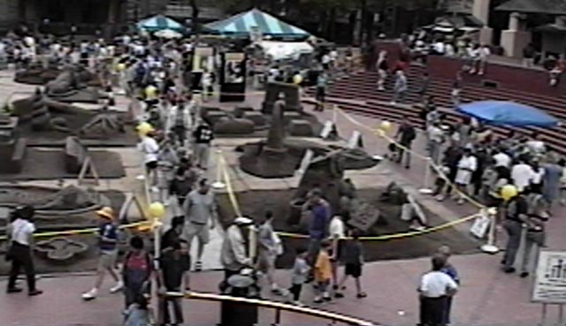
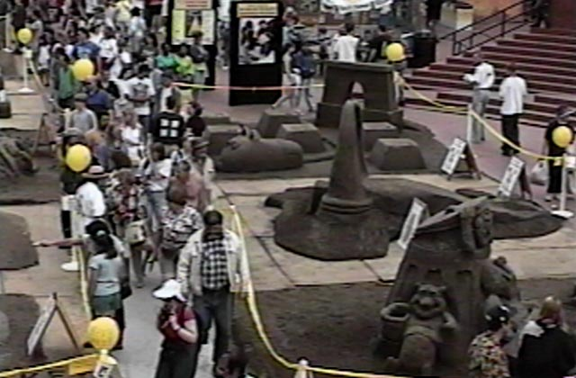
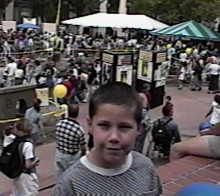
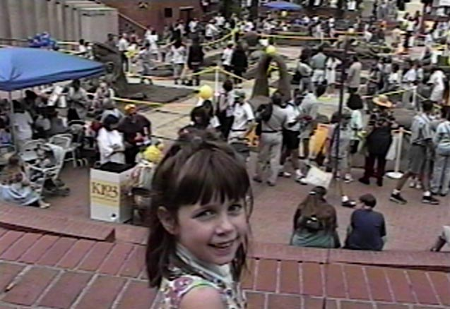

The weather was about 72 degrees and partly cloudy. Plenty warm. The crowds were nowhere
near overwhelming. A nice day at the square.

Look. More crowd.

You try to take a shot of the crowd, and some sharp looking young man steps in to the
picture. What're you going to do? (That's my son, Brian)

Same deal. My daughter Laurel. If I ever wonder why I wanted to do the parent thing,
a smile like that pretty much brings it home. Hey! It's my pictures and my write-up, I get to
brag about my kids if I want to ;-)